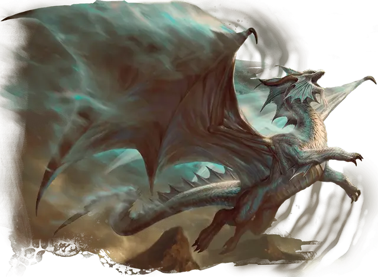

Аспект Бахамута
Aspect of Bahamut
Громадный Дракон (Металлический), законно-добрый

Класс Доспеха 23 (природный доспех)
Хиты 585 (30к20 + 270)
Скорость 60 футов, плавая 60 футов, летая 120 футов, копая 60 футов
| мод | спас | ||
|---|---|---|---|
| СИЛ | 30 | +10 | +10 |
| ЛОВ | 18 | +4 | +4 |
| ТЕЛ | 29 | +9 | +18 |
| мод | спас | ||
|---|---|---|---|
| ИНТ | 25 | +7 | +16 |
| МДР | 28 | +9 | +18 |
| ХАР | 30 | +10 | +19 |
Навыки Восприятие +18, Проницательность +18, Убеждение +19
Иммунитет к урону излучение, кислота, огонь, холод, электричество; дробящий, колющий, рубящий от немагических атак
Иммунитет к состояниям ослепление, паралич, очарование, глухота, испуг, ошеломление
Чувства истинное зрение 120 футов, пассивное Восприятие 28
Языки Общий, Драконий
Опасность 30 (155000 опыта)
Бонус мастерства +9
Особенности
Легендарное сопротивление (5/день). Если аспект проваливает спасбросок, он может вместо этого сделать спасбросок успешным.
Платиновый блеск (перезаряжается после короткого или длительного отдыха). Если хиты аспекта будут уменьшены до 0 хитов, его текущее общее количество хитов вместо этого становится 500, он перезаряжает своё Оружие дыхания и восстанавливает все израсходованные использования Легендарного сопротивления. Кроме того, аспект теперь может использовать действия из раздела «Мифические действия» в течение 1 часа.
Дайте группе дополнительные 155 000 опыта (всего 310 000 опыта) за победу над аспектом Багамута после активации его Платинового блеска.
Действия
Мультиатака. Аспект совершает одну атаку укусом, одну атаку когтем и одну атаку хвостом.
Укус. Рукопашная атака оружием: +19 к попаданию, досягаемость 20 фт., одна цель. Попадание: 23 (2к12 + 10) колющего урона плюс 22 (4к10) урона силовым полем .
Коготь. Рукопашная атака оружием: +19 к попаданию, досягаемость 15 фт., одна цель. Попадание: 21 (2к10 + 10) рубящего урона. Если цель - существо Огромного размера или меньше, то оно становится схваченным (Сл высвобождения 20) и опутано до тех пор, пока этот захват не закончится. Одновременно аспектом может быть схвачено только одно существо.
Хвост. Рукопашная атака оружием: +19 к попаданию, досягаемость 15 фт., одна цель. Попадание: 23 (2к12 + 10) дробящего урона. Если целью является существо, оно должно преуспеть в спасброске Силы Сл 27 или будет сбито с ног.
Оружия дыхания (перезарядка 5–6). Аспект использует один из следующих видов оружия дыхания:
• Возвышающее дыхание. Аспект выдыхает восстанавливающие ветры горы Целестия 300-футовым конусом. Каждое существо в этой области по выбору аспекта восстанавливает 71 (13к10) хитов, и каждое существо в этой области по выбору аспекта, которое было мёртвым не дольше 1 часа, возвращается к жизни со всеми своими хитами.
• Платиновое дыхание. Аспект испускает сияющее платиновое пламя 300-футовым конусом. Все существа в этой области должны совершить спасбросок Ловкости Сл 26, получая 66 (12к10) урона излучением при провале или половину этого урона при успехе.
Бонусные действия
Изменение формы. Аспект магическим образом превращается в любого Гуманоида или Зверя, сохраняя при этом свою игровую статистику (кроме его размера). Это преобразование заканчивается, если хиты аспекта уменьшаются до 0 или если он использует бонусное действие, чтобы завершить его.
Легендарные действия
Аспект багамута может совершать 3 легендарных действия, выбирая из вариантов ниже. Одновременно можно использовать только одно легендарное действие и только в конце хода другого существа. Аспект багамута восстанавливает потраченные легендарные действия в начале своего хода.
Атака. Аспект совершает одну атаку когтём или хвостом.
Яростный укус (стоит 2 действия). Аспект совершает одну атаку укусом. Если атака поражает существо, цель должна преуспеть в спасброске Мудрости Сл 27, иначе станет испуганным аспектом до конца следующего хода цели.
Мифические действия
Если особенность аспекта «Платиновый блеск» активировалась, в течение часа, он может использовать указанные ниже варианты как легендарные действия.
Небесный щит (стоит 2 действия). Аспект проявляет вокруг себя семь спектральных древних золотых драконов, которые защищают его; он получает 77 временных хитов до начала своего следующего хода.
Небесные копья (стоит 3 действия). Аспект вызывает четыре огромных копья из силового поля, которые падают на землю в четырех разных точках, которые он может видеть в пределах 150 футов от него, а затем исчезают. Каждое существо в цилиндре радиусом 20 футов и высотой 100 футов с центром в каждой точке должно преуспеть в спасброске Ловкости Сл 27, иначе получит 24 (7к6) урона силовым полем. Существо в области более чем одного копья поражается только один раз.
Описание
Известный как Платиновый дракон, Багамут является покровителем и прародителем металлических драконов. После бегства из Первого Мира он поселился на Семи Небесах горы Целестия и часто причисляется к богам этого плана. Искатели приключений и драконы одинаково молятся Багамуту, чтобы защитить честь и справедливость, или когда им требуется мужество, чтобы противостоять большой угрозе. В самых тяжелых ситуациях могущественный последователь Багамута, который приносит огромную жертву — огромный клад или даже собственную жизнь последователя, — может убедить бога послать помощь миру в форме божественного аспекта. Этот аспект является физическим проявлением Платинового Дракона, несущего его воспоминания и волю — и значительную часть его огромной силы.
Аспект Багамута демонстрирует всю славу Платинового Дракона, возвышающегося даже над древними драконами. Покрытый платиновой чешуей, его физические черты сочетают в себе различные элементы пяти видов металлических драконов — по мнению некоторых ученых, сочетая их по-разному с каждым проявлением аспекта. Но Багамут также любит путешествовать по Материальному Плану в маскировке, поэтому его облик может выглядеть как высохший старый мудрец, молодой монах или певчая птица. В любой форме аспект Багамута часто сопровождается семью древними золотыми драконами [ancient gold dragon], которые предпочитают маскироваться под канареек.
В бою враги Багамута испытывают на себе всю силу его правосудия, в то время как его союзники в полной мере пользуются его милосердием. Его дыхание может нанести колоссальный ущерб и произвести чудесное исцеление, и мало что в мире смертных может причинить ему длительный вред.